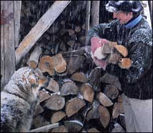
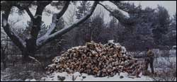
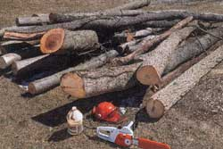
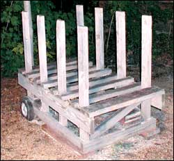
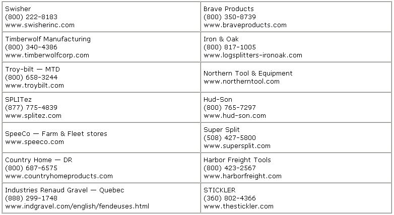
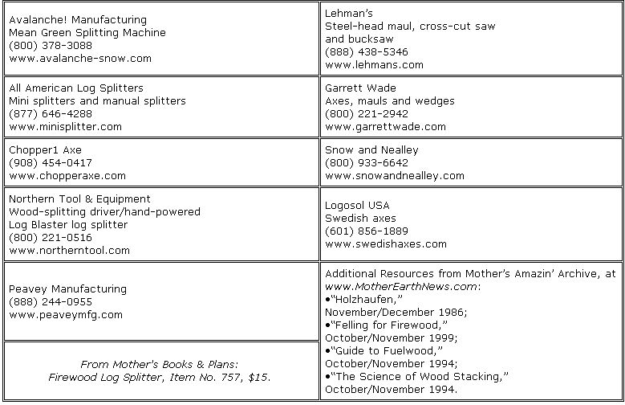

Harvesting renewable wood to heat your home is one of the most satisfying, self-reliant things you can do. Modern Environmental Protection Agency-certified stoves burn much cleaner than older models and are often twice as efficient, which means a home that required four cords with an old stove would only need two cords with many newer models.
We invited Mother Earth News readers to share their advice on the best ways to split and handle firewood, and to tell us about their favorite firewood-handling tools. Thanks to all who replied! Here’s a roundup of advice and wisdom gleaned from your letters. - Mother
WHY HEAT WITH WOOD?
Last year a friend was anxious to get rid of a 10-year-old pile of firewood. I agreed to take it off her hands. As I loaded my truck, she asked if it really cuts down on my heating bill. I grinned and answered, ‘I don’t have a heating bill!’
Karen Secor
Ogden, Utah
As with bread making, splitting wood must be done by hand to get the most out of it. Your spirit and your body are warmed by the handling of each piece of wood.
Robert Smith
Greenville, Maine
Working out WITH WOOD
The wood I cut warms my home throughout the winter months, and I even sell some to my neighbors. The extra cash helps pay for my membership to the YMCA. I’m the only guy there who hurries through a workout so I can rush home to split some more firewood.
Fred Stauffer
Chester County, Pennsylvania
I view log splitting as my workout. It sure beats the gym workouts of my previous lifestyle.
Barbara Heyl
Afton, Virginia
FINDING FREE WOOD
A source of almost-free firewood is a wood-cutting permit in a state forest. You are only allowed to take dead or “down” wood, and there may be a restriction on how much you take.
Construction sites are full of 10- to 20-inch-long pieces of 2-by-4s and 2-by-6s. They burn beautifully and would just go into a landfill otherwise!
After a big ice storm or windstorm, you might be able to get paid for taking firewood by offering yard cleanup.
Katrina Kandoll
Vancouver, Washington
In the West, we have thousands of square miles of forest devastated by insects and forest fires where pro-environmently inclined judges do not allow timber sales. Local U. S. Forest Service (USFS) ranger stations can direct people to accessible areas. We try to cut trees above a road and roll the sawn blocks down to the roadway.
Zane Kelly
Polson, Montana
Choosing a TOOL
The tools you use can make the difference between a pleasurable job and a nightmare. Many readers recommended getting a good chain saw. The Husqeuvarna 365, Homelite, Echo and Stihl all received positive reviews. For splitting wood, there seemed to be three well-defined camps - the ax or maul users, the hammer-with-wedge fans and the log splitter advocates. - Mother
My biggest asset is a good chain saw - a 28-inch Husky 365. I cut the wood into slabs about 4 inches thick. I can then break them into small blocks with a swing of a light ax with my one good arm (since shoulder surgery last year.) I also rotate my chain and have it sharpened often.
Bruce Peterman
Anza, California
All for the Maul
The Monster maul, at one time manufactured by the Sotz Corporation, was advertised for years in Mother Earth News. Unfortunately, the company has gone out of business, but the Log Blaster is a good substitute. - Mother
I love my splitting maul! I only use an ax to de-limb large branches and trunks prior to cutting them. I have two 6-pound mauls. My best suggestion: Cut logs that don’t need splitting (4 to 6 inches in diameter) whenever you can. Yeah, I’m not much of a purist, but we all have only so much time!
Michael Cunningham
Colorado
After 40 years of woodwork, my two favorite splitters are the Monster maul and a hand hydraulic splitter. The Monster will stand on its head so that you do not have to bend over to pick it up.
Tom Eden
Percival, Iowa
I use a “Log Blaster” on my firewood. It’s a lot cheaper than a subscription to a gym. It also helps to get rid of the frustrations of the workday.
Scott VanArsdale
Otego, New York
Personally, I prefer using hand tools and elbow grease. I do this mainly for safety. I use a 4-foot-long crosscut saw, a Polaski (an ax with a broad, flat-ended pick fashioned onto the other side of the ax blade), a splitting ax and a maul. Doing my work this way eliminates the risk of injury and dangerous exhaust when using a chain saw.
The time and effort put into keeping my home warm may seem greater than if I used power tools, but when I think of how much work and money goes into manufacturing a chain saw, its necessary replacement parts, oil and gasoline, I am inclined to believe that both methods require an equal amount of energy.
Ian Chapman
Rochester, Washington
Most of the time I use my trusty, old, 8-pound splitting maul. When I’m splitting large wood - 10 inches or more - I try to never aim for the center of the log. It is too easy to have the ax stick in the log. I try to hit either side of center, so that the rings break from the outer to the inner parts of the log.
Also, don’t make the maul too sharp or it will stick in the wood. You don’t want it to be too blunt either or it will just bounce off the log. Rather, you want it somewhere in between so that the blade will cut into the wood and force it apart.
Another thing to remember about firewood is to treat it like wine: Cut it long before you need it and allow it to properly season before burning it.
Kevin Wilcox
Whitneyville, Maine
I am young and in good shape, and I like splitting wood by hand. You can buy mauls with wood or fiberglass handles. Wood-handled mauls are easier on your elbow joints, but they break easily. Set the piece you intend to split on a large log round used as a chopping block. This will work better than setting the piece on the ground, which would act as a cushion and take away some of the force of your blow. Also, using a chopping block keeps your ax out of the dirt and provides a better angle for splitting,
Dave Pedigo
Silver City, New Mexico
Axes and Wedges
Some years ago I received a Chopper1 Axe as a Christmas gift. This was a great improvement over using a steel wedge and maul because you only have to handle one tool. When you come down on a log with a mighty swing, there are two possibilities - the log will split or the ax will leave the log with a slight bounce, without becoming buried as with a wedge or regular ax.
Dwayne Yelton
Ratliff City, Oklahoma
In 2003 we bought a 47-acre farm in France. I have a 10-acre woodlot that has coppice (a thicket of small trees or shrubs) that has not been harvested in 10 years. I’ve thought about having a device that uses the PTO (power take-off) from the tractor but - and this is a big but - it would need fuel to run. And, I am trying to help the world in my own little way, by using hand-powered instead of petroleum-powered tools. So, for me, now, the ax is the only way to split wood.
Brian Tassell
Brittany, France
I am in a wheelchair and my mobility is limited. Splitting seemed impossible until I found a great tool from the Garrett Wade Tool catalog. It is a twisted splitting wedge that twists the wood as it is hammered into the log. Works like a charm.
Dennis Kelleher
New Lisbon, New York
SPLITTERS
I used to use a hydraulic splitter that hooked on the 3-point of our tractor, but when I quit smoking, I decided to split my wood by hand, to help keep the weight off. I was not very good when I started. Sometimes I’d hit the wedge at an angle and it’d fly out of the log. Sometimes I’d hit the wedge with the handle of the maul because I couldn’t judge distance very well. Oops! Wood sometimes would bind up and fail to split. Sometimes I got both wedges stuck and looked a fool trying to wedge apart something that just “laughed” at me. I persevered. I improved. I’m a capable splitter these days.
Jessica Gothie
Breezewood, Pennsylvania
My first choice for splitting tools is a 10-ton horizontal/vertical log splitter. A neighbor and I are co-owners of it.
George Fetrow
York Haven, Pennsylvania
Manual splitting is very labor intensive. If you are going to heat your home completely with wood and you have an outside job, then an hydraulic log splitter is a must. I have an MTD Yard Machine with a 5-horsepower engine. It is rated at 20 tons.
Phil Carreon
Southern Illinois
A few years ago I developed tendinitis and had to find a log splitter. I found an advertisement for a used one. I was told it was different than most splitters because it used a 3-horsepower engine and a flywheel instead of a large engine and hydraulics. The small engine means it’s possible to start it in cold weather without an electric starter and battery, and if it ever should wear out, it is less expensive to replace. It “sips” gas, is light enough to move easily and splits wood faster than I am able to load while working at a comfortable pace. The splitter is also available with an electric motor that would make the work much quieter. The name of it is the Super Split Jr.
Jack Middleton
Averill Park, New York
I told myself that if I ever owned my own house I would invest whatever money it took for a log splitter. I came across an electric log splitter sold by Harbor Freight Tools for far less than I was expecting to pay. It has a small (4-ton) ram, which to me seems all that one needs. I think most splitters are far overpowered. I don’t have any gasoline to deal with, no motor oil to check and no smelly fumes.
Davison Harvey
West Swanzey, New Hampshire
Cutting in short pieces is so much easier. We cut oak for the most part and that splits much easier than other woods. Using an ax is fine for shorter pieces. I was disappointed in the maul. Even though it works, it’s so heavy that it was too tiring and unwieldy for me to use. For my money, a gas-powered splitter is the way to go to make the most of what can be back-breaking work. Swinging an ax or maul gets old mighty fast.
Camille Sauvager
Cold Harbor, Virginia
I recommend trying out a hydraulic splitter before buying one. Renting one for a few weeks to see if it works well for you is a good test.
Richard Prouty
Pawlet, Vermont
THE STICKLER
There is no question, the best and by far the most economical log splitter is the “Stickler,” as featured in Mother Earth News in the 1970s. This splitter mounted on the rear drive wheel of a vehicle and, basically, screwed itself into the log, breaking the log apart. Forget gasoline and hydraulic hassles! The “Stickler” is the best!
Paul and Sue Harris
Boise, Idaho
Auger splitters are the type that you can attach to the wheel of your truck (after you jack up the truck, remove the wheel and put a jack stand under the axle). I used one of these when I first started cutting wood and have had some experiences with them that I would consider dangerous. The truck needs to be in gear for this type to work; if the truck ever comes off the jack stand, disaster is imminent.
Chris Knors
Maryville, Tennessee
Read more about auger splitters and Stickler inventor David Kimball’s tremendously successful bootstrap business in Mother’s Amazin’ Archive; search for “Stickler” at www.MotherEarthNews.com. - Mother
MEAN GREEN SPLITTING MACHINE
This hand-operated splitting machine works well for most wood that I have tried. But it is made overseas and the directions are poorly written. It also comes in pieces; both the splitter and the base require assembly. Some of the wooden base parts were not cut well and were not square. Some of the assembly holes did not line up well.
The splitter itself works pretty well, but, because of the base size, you are limited to the size of wood you can split.
Despite the negative comments, I think it’s a good choice for the physically and fiscally challenged.
Sharon Safina
Independence, Oregon
Local terminology differs but generally, a “cord” describes the amount of wood in a stack of 48-inch logs (or cut logs equaling 48 inches) that is 4 feet high and 8 feet wide. Often, firewood is sold in a half-cord, also known as a face-cord or a rick. which describes a stack of the same dimensions as a cord, except the logs are 24 inches long. Many fireplaces and woodstoves cannot accommodate 24-inch logs, though, so firewood often is cut to 20 inches, to ensure that it fits.
Dwayne Yelton
Ratliff City, Oklahoma
WOOD SPLITTING TABLE
What has helped us with the task of splitting all our free firewood is “Build a Log-splitting Table” from the October/ November 2002 issue. It suggested making a small table to stack a few logs on prior to splitting. I simply roll the logs from the table onto the splitter. I can split at least a full wheelbarrow load with one table of logs, then stack them, reload the table and start over again. It goes much faster and with a lot less bending over.
Terry and Kathy Romich
Green Lane, Pennsylvania
For a great discussion of low-impact techniques and tools for working effectively with logs in a forest location, we recommend www.rockisland.com/~tom/tools, written by Mother Earth News reader Tom Schroeder, a conscientious small-scale logger in the San Juan Islands of Washington state. - Mother
Handy Log-cutting Crib
Here is a log-cutting framework I made to hold logs while I cut 14-inch sections for my woodstove. By cutting between the uprights, I can get four equal size pieces of firewood.
Bill Roy
Williston, Vermont
Bigger Machinery Helpful
I bought a small Kubota tractor, hydraulic wood splitter and a tractor-driven wood chipper after my son went off to college. I make use of every leaf of every tree that I drop. First, when I drop a tree, I limb it up and transport all the limbs to my “chipping” area. Then, with the backhoe, I am able to move sections of logs over to my row (or pile) of rounds. I can then cut the rounds at a comfortable height without pinching my saw blade.
After the rounds are cut, I start at one end with my hydraulic log splitter and split every round. The log splitter is a tremendous addition. I have a degenerating disc in my neck and working a splitting maul even for a short time is very painful for me. With the hydraulic splitter, I can split a tremendous amount of wood in a very short period of time. After splitting (this is the good part), I put everything on pallet boards so I won’t have to handle it again until I take it into the house. I have reduced the number of times I handle the wood significantly by palletizing. I have a chipper/shredder that I use to create some great compost/mulch that I use for landscaping and in my garden, too.
Greg Johnson
Hansville, Washington
|
 Lynn Karlin Cutting and splitting firewood is strenuous work; one benefit is the opportunity to be in touch with the outdoors in all seasons. |
 Neil Soderstrom The wood pile at left will equal one cord of wood when cut and stacked. |
 Hydraulic Log Splitters |
|
 Axes, Mauls and Other Hand-operated Splitters |
 |
 |